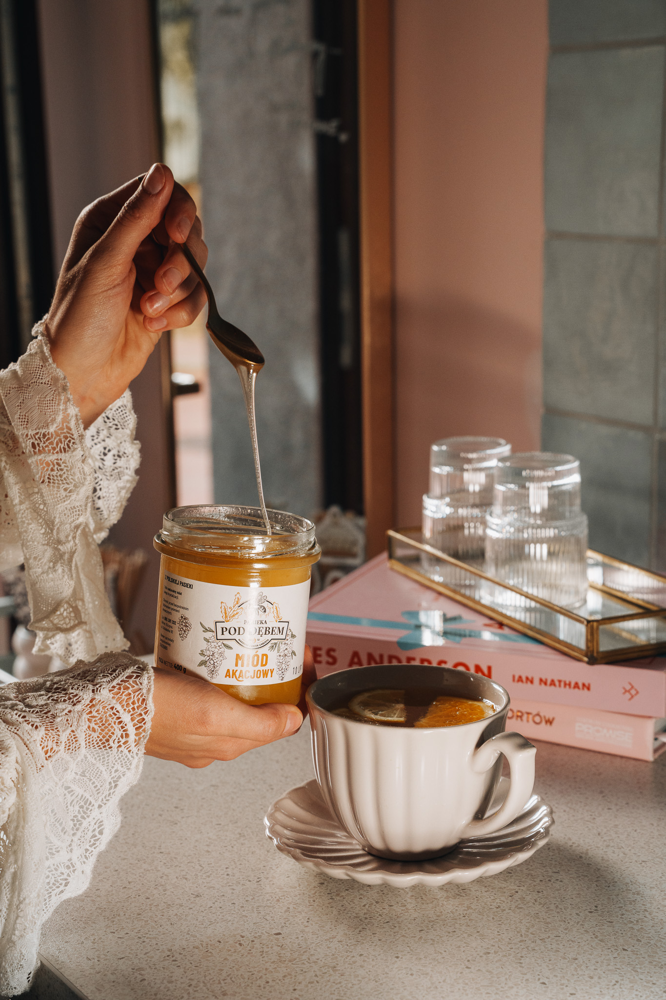
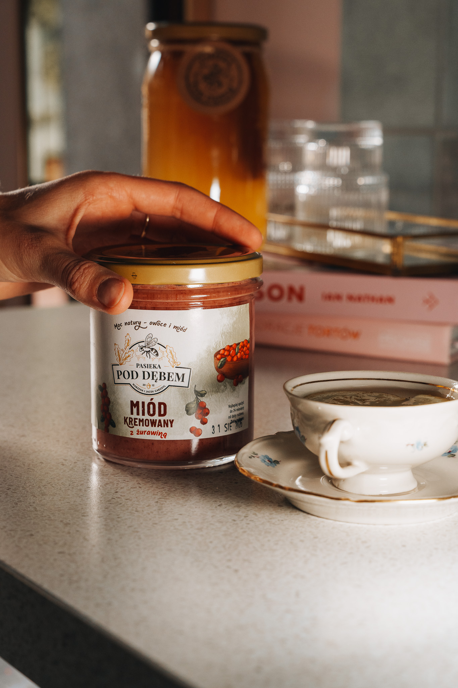

Miód na dobre chwile.
Klasyczne miody, kremowane warianty i produkty pszczele. Dodaj produkty do koszyka i przygotuj zamówienie do potwierdzenia.
Kiczyce, gmina Skoczów · Śląsk Cieszyński

Znajdź swój słoik.
Wybierz rodzaj, sprawdź gramaturę i dodaj produkty do koszyka.
Fotografie i opisy są robocze. Ceny według cennika 2026; dostępność do potwierdzenia.
Kliknij fotografię, aby ją powiększyć.

Mała przyjemność.
Po swojemu.
Na śniadanie, do spokojnej chwili albo po prostu wtedy, gdy masz ochotę. Wybierz klasyczny rodzaj miodu lub poznaj kremowane warianty z oferty.
Wróć do ofertyPasieka Pod Dębem — od 2012 roku.
Pasieka Pod Dębem to rodzinna pasieka z Kiczyc, na Śląsku Cieszyńskim. Od 2012 roku pracujemy z pszczołami, obserwujemy sezon i zbieramy miody, których charakter zmienia się wraz z kwitnieniem okolicznych łąk i upraw.
Nie jesteśmy dużą pasieką. To pozwala nam zachować prosty model pracy: dbać o ule, reagować na potrzeby rodzin pszczelich i przygotowywać produkty w ilościach, które realnie możemy zebrać w danym sezonie.
Jak powstała pasieka
Początki Pasieki Pod Dębem to kilka uli, nauka przez codzienną praktykę i coraz większa ciekawość świata pszczół. Z czasem pasieka rosła, a wraz z nią oferta miodów i produktów pszczelich.
Dziś w ofercie znajdziesz miody klasyczne, kremowane warianty smakowe, pyłek pszczeli oraz pierzgę. Każdy sezon jest inny — dlatego dostępność poszczególnych rodzajów miodu może się zmieniać.
Kiczyce i okolice
Nasza pasieka działa w Kiczycach, w gminie Skoczów. To stąd pochodzą nasze produkty i stąd prowadzimy bezpośredni kontakt z klientami.
Praca z pszczołami
Praca w pasiece podlega rytmowi roku: wiosną rozwój rodzin, latem zbiory, jesienią przygotowanie do zimy. Miód trafia do słoików po zakończeniu sezonu zbiorów.
Prosto i lokalnie
Produkty można odebrać w Kiczycach albo spotkać nas na giełdzie w Wapienicy. Aktualności i dostępność publikujemy na Facebooku.
Pytania i odpowiedzi.
Jak złożyć zamówienie?
Wybierz produkt i gramaturę, dodaj go do koszyka, a następnie wypełnij krótki formularz. Zamówienie przygotujesz do potwierdzenia przez pasiekę.
Czy mogę zapłacić online?
Jeszcze nie. Płatność online jest w przygotowaniu. Zamówienie można przekazać do potwierdzenia telefonicznie lub SMS-em.
Skąd pochodzą ceny?
Z cennika 2026. Dokument nie określa bieżącego magazynu ani kosztów dostawy. Pierzga ma cenę dla 200 g; wariant 0,5 kg nie ma podanej ceny.